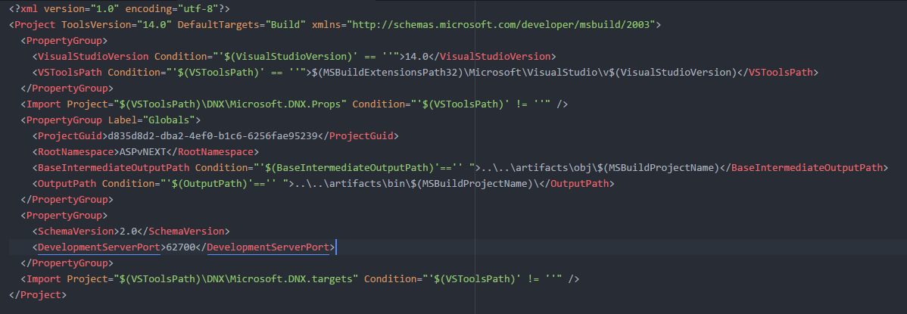
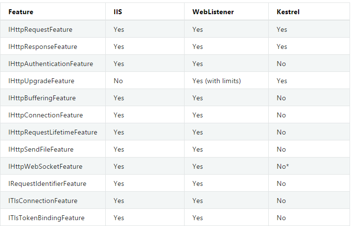
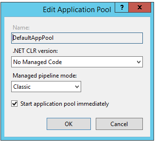
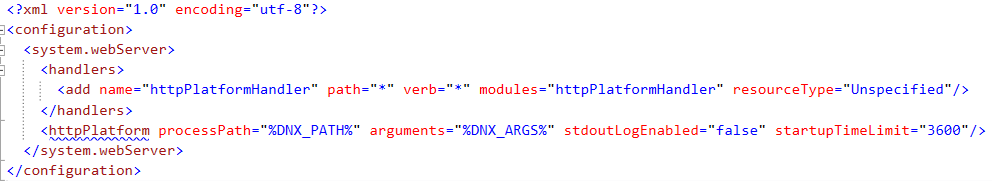
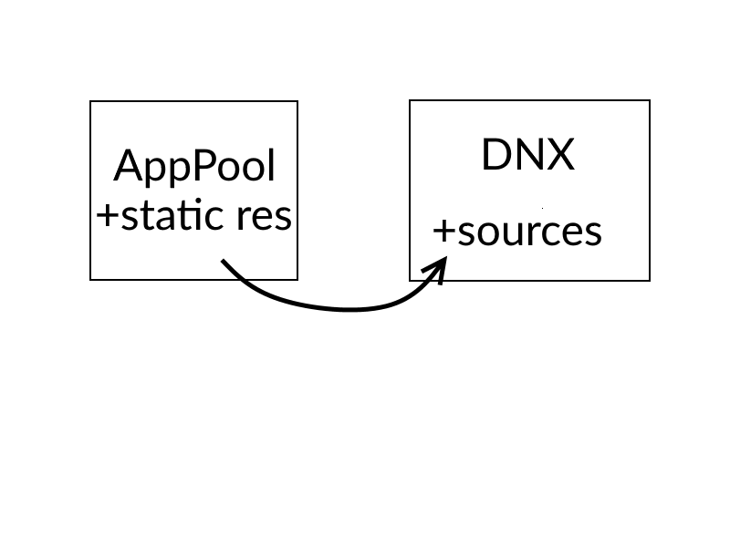

Transition to vNext
Kamil Radlak
radlak.kamil@gmail.com
Agenda
- First Steps, how to start?
- How to host your application?
- How does it work?
- How to work with it?
First Steps, how to start?
Visual Studio
- Visual Studio 2015 Update 1
- ASP.NET and Web Tools 2015 (RC1)
- type in console
λ dnvm upgrade-self λ dnvm update - and we are ready!
yo
You can also create and run project without Visual Studio by using npm
λ npm install -g yo bower generator-aspnet gulpChanges, changes, changes
.xsproj

Projects are also nuget packages
Changes, changes, changes
web.config
packages.config
packages.config
project.json
project.lock.json
whatever.json
project.lock.json
whatever.json
global.asax
Startup.cs
global.json
global.json
How to host your application?
Different types of hosting
- WebListener
- Kestrel
- IIS
Supported Request Features
WebListener
- HTTP.SYS-based hosting
- Windows only
- Support features like multiple apps on single port
Kestrel
- Self hosting on Mac OS X and Linux
- Provided Docker image
IIS hosting
- Install HttpPlatformHandler
- Use App Pool as usually
- But set "No Managed code"

Wait, what?
HttpPlatformHandler
 IIS + Kestrel
How does it work?
New tools
- DNVM
- .Net Version Manager
- DNU
- Manages nuget packages in project
- DNX
- Executes commands
You can install additional commands
λ dnu commands install Microsoft.Dnx.Watcher
λ dnx-watch- Observes changes in code
- Restarts application and recompile
- You need only reload page
How to work with it
Pipeline
You have to explicitly specify what goes to the pipeline

app.UseMVC();|